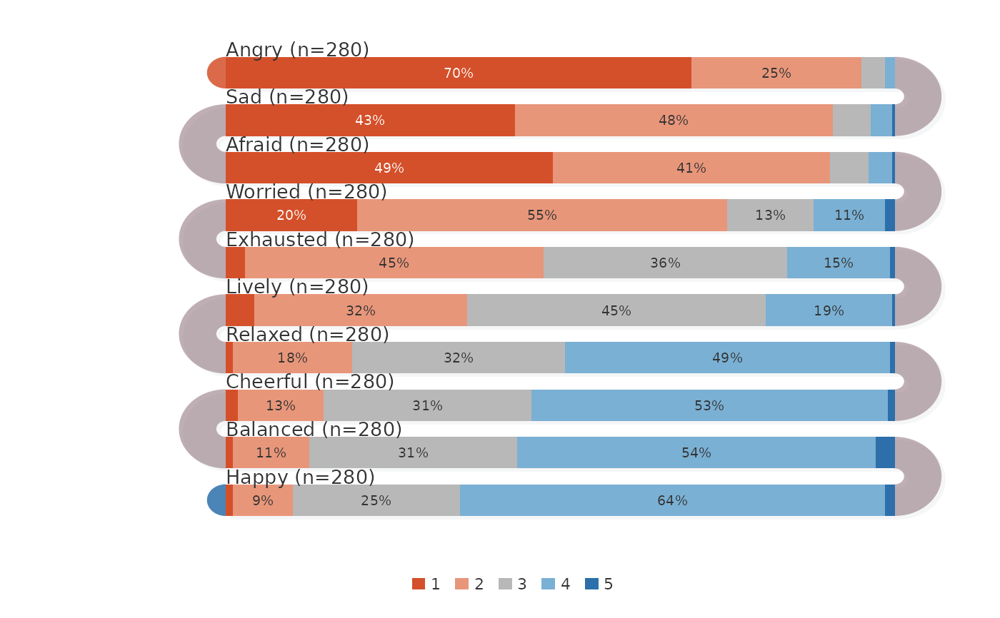
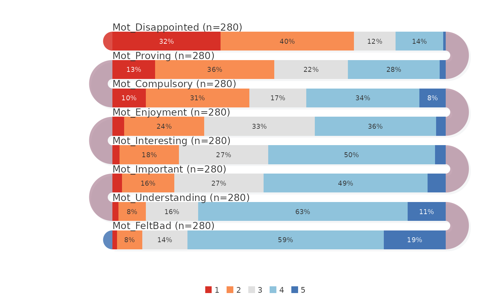

Plot survey responses as a serpentine of stacked bars
Source:R/survey_sequence.R
survey_sequence.RdA survey sequence shows the distribution of responses to a set of rating items as one 100% stacked bar per item. The bars are the bands of a serpentine joined by U-turns, so a long instrument fits in one panel in its item order and the share of each response level can be compared between items. Heiberger and Robbins (2014) discuss the design of stacked bar charts for rating scales.
survey_sequence() accepts raw responses or a table of counts. Segments
are colored by response level, with a diverging palette by default, and
carry their percentage when wide enough. Items can be sorted by mean or by
net agreement. Each U-turn takes the color midway between the levels at
the two ends it joins, or a neutral grey.
sequential_dist() draws the same display with a single-hue palette for
scales without a neutral midpoint. survey_snake() shows each response as
a tick and can show correlations between adjacent items.
Usage
survey_sequence(
counts,
labels = NULL,
levels = NULL,
band_height = 28,
band_gap = 14,
plot_width = 500,
colors = NULL,
show_percent = TRUE,
min_segment = 34,
arc_style = c("gradient", "neutral"),
arc_opacity = 0.5,
sort_by = c("none", "mean", "net"),
shadow = TRUE,
show_legend = TRUE,
label_color = "#333333",
label_size = 0.85,
label_align = "left",
reverse_rtl = FALSE,
start_from = c("left", "right"),
flow = c("snake", "natural"),
title = NULL,
margin = c(top = 30, right = 10, bottom = 55, left = 100),
background = "white"
)Arguments
- counts
Responses: a data frame of raw responses (one row per respondent, one column per item), a numeric matrix of counts (items in rows, response levels in columns), or a data frame of counts. A data frame is read as raw responses when its columns hold few distinct whole-number or categorical values relative to its number of rows.
- labels
Item labels, one per item.
NULL(default) uses the row names of a count table, or, for raw responses, the column names with the number of responses.- levels
Response levels in scale order.
NULL(default) uses the column names of a count table, or, for raw responses, the factor levels or the sorted distinct values. For raw responses the levels must match the values in the data.- band_height
Height of each band in plot units (default 28).
- band_gap
Gap between bands in plot units (default 14).
- plot_width
Length of each band in plot units (default 500).
- colors
One color per response level, in scale order. Only the first
length(levels)colors are used, so passsnake_palette(name, n = <number of levels>).NULL(default) uses a red-to-blue diverging palette.- show_percent
Print percentages inside the segments (default
TRUE).- min_segment
Minimum segment width, in plot units, for a percentage to be printed (default 34).
- arc_style
"gradient"(default) colors each U-turn midway between the levels at its two ends;"neutral"draws it grey.- arc_opacity
Opacity of the U-turns, between 0 and 1 (default 0.5).
- sort_by
Order of the items:
"none"(default, input order),"mean"(increasing item mean) or"net"(increasing share of responses above the middle level minus share below; the mean for scales with fewer than four levels).- shadow
Draw drop shadows (default
TRUE).- show_legend
Draw the legend (default
TRUE).- label_color, label_size
Color and size multiplier of the item labels (defaults
"#333333"and 0.85).- label_align
Alignment of the item labels:
"left"(default),"right", or"direction"to follow each band's reading direction.- reverse_rtl
Reverse the order of levels on bands that read right to left, so every band starts with the lowest level in its reading direction (default
FALSE: lowest level on the left of every band).- start_from
Side on which the first band starts:
"left"(default) or"right".- flow
"snake"(default): bands alternate direction."natural": every band reads in the same direction.- title
Plot title, or
NULL(default) for none.- margin
Named numeric vector of
top,right,bottomandleftmargins in plot units (defaultc(top = 30, right = 10, bottom = 55, left = 100)).- background
Background color (default
"white").
Value
The plot is drawn on the current device. The function returns,
invisibly, an object of class snake_layout: a list describing the drawn
geometry, with bands (a data frame with one row per item band giving
its index, position, and drawing and reading direction), arcs (a list
with one element per U-turn), canvas and plot_area (dimensions in
plot units), orientation, flow and params (the sizes used).
References
Heiberger, R. M., & Robbins, N. B. (2014). Design of diverging stacked bar charts for Likert scales and other applications. Journal of Statistical Software, 57(5), 1-32. doi:10.18637/jss.v057.i05
See also
sequential_dist() for single-hue bars; survey_snake() for
individual responses and item correlations; snake_palette() for level
colors.
Examples
# Ten emotion items, sorted by net score
survey_sequence(ema_emotions, sort_by = "net")

# Study motivation items with another diverging palette
motivation <- subset(student_survey,
select = Mot_Disappointed:Mot_Enjoyment)
survey_sequence(motivation, sort_by = "mean",
colors = snake_palette("ocean", n = 5))
